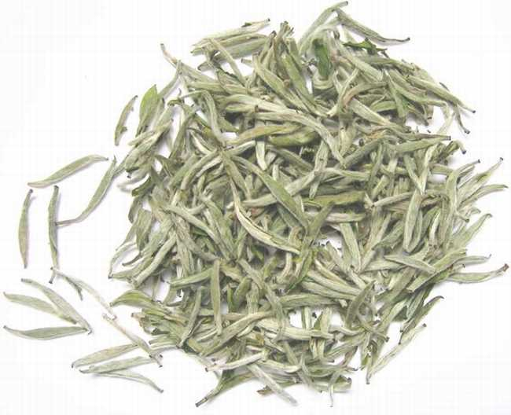

白茶及其特性
按茶色不同来分类——白茶：
白茶，顾名思义，这种茶是白色的，一般地区不多见。白茶是我国的特产，产于福建省的福鼎、政和、松溪和建阳等县，台湾省也有少量生产。白茶生产已有200年左右的历史，最早是由福鼎县首创的。该县有一种优良品种的茶树——福鼎大白茶，茶芽叶上披满白茸毛，是制茶的上好原料，最初用这种茶片生产出白茶。茶色为什么是白色？这是由于人们采摘了细嫩、叶背多白茸毛的芽叶，加工时不炒不揉，晒干或用文火烘干，使白茸毛在茶的外表完整地保留下来，这就是它呈白色的缘故。
白茶最主要的特点是毫色银白，素有“绿妆素裹”之美感，且芽头肥壮，汤色黄亮，滋味鲜醇，叶底嫩匀。冲泡后品尝，滋昧鲜醇可口，还能起药理作用。中医药理证明，白茶性清凉，具有退热降火之功效，海外侨胞往往将银针茶视为不可多得的珍品。白茶的主要品种有银针、白牡丹、贡眉、寿眉等。尤其是白毫银针，全是披满白色茸毛的芽尖，形状挺直如针，在众多的茶叶中，它是外形最优美者之一，令人喜爱。汤色浅黄，鲜醇爽口，饮后令人回味无穷。

各类白茶名：银针白毫；白牡丹；贡眉；白牡丹；寿眉等。